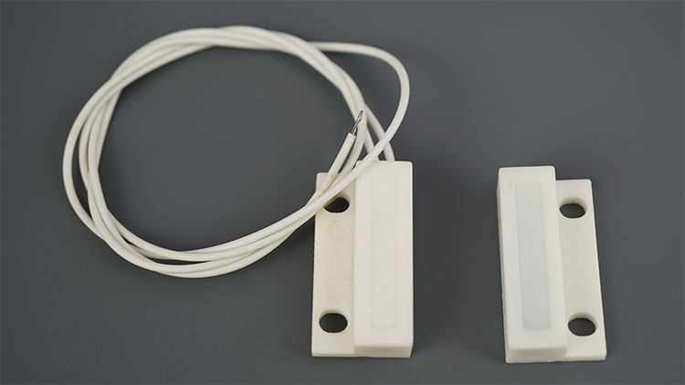
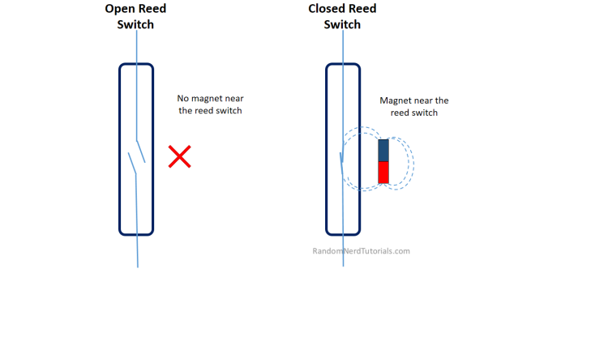
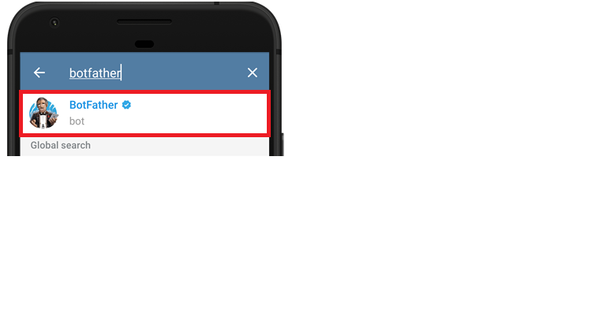
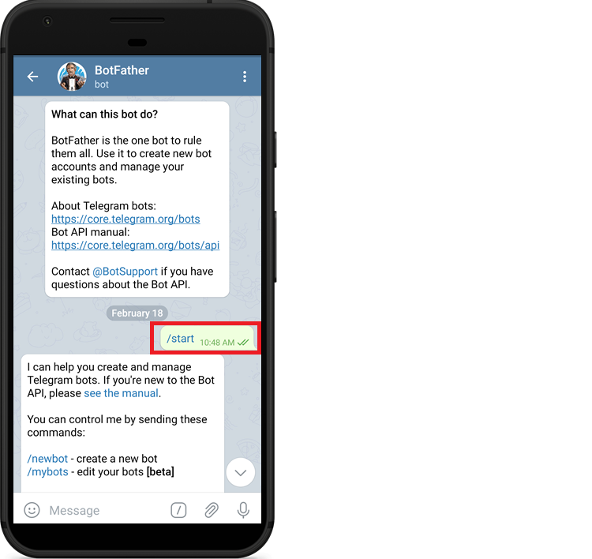
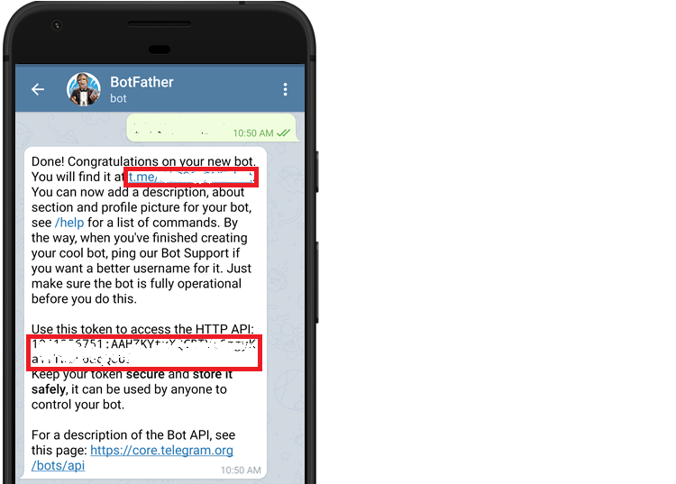
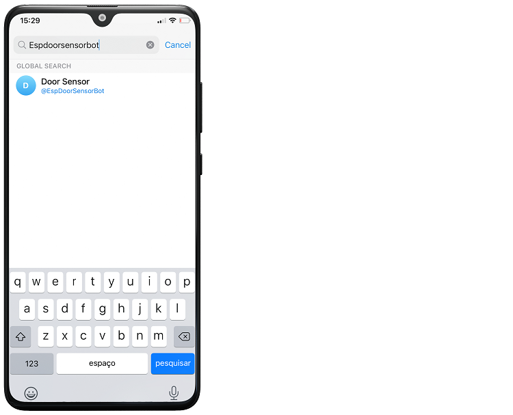
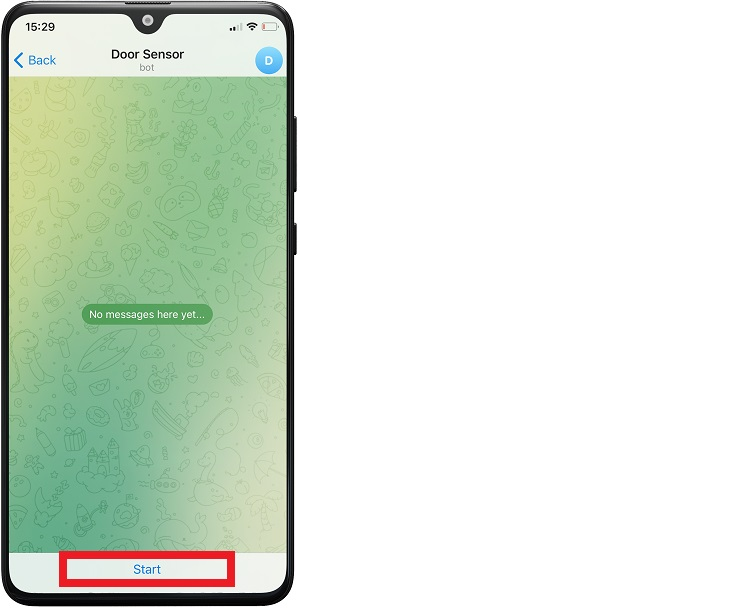
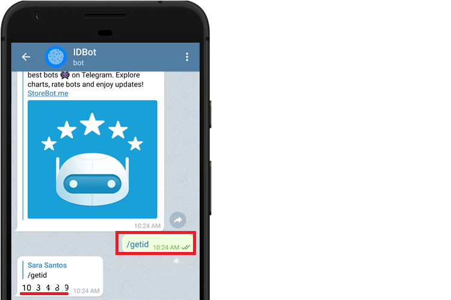
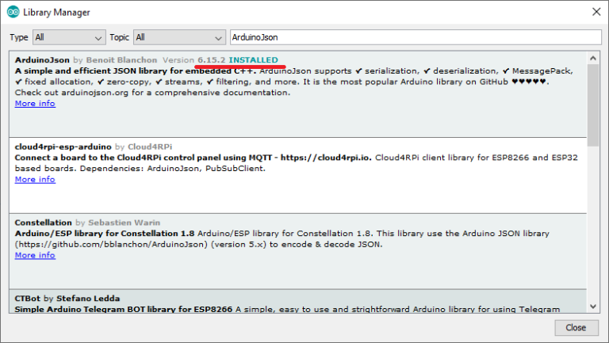
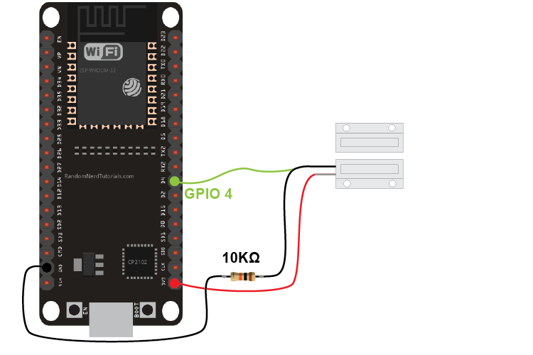

En este proyecto, crearemos un Telegram Bot que enviará mensajes a nuestra cuenta de Telegram cada
vez que una puerta cambie de estado. Para detectar el cambio, usaremos un interruptor de contacto magnético.
Un interruptor de contacto magnético es básicamente un interruptor de lengüeta encerrado en una
carcasa de plástico para que pueda aplicarlo fácilmente a una puerta, una ventana o un cajón para
si está abierto o cerrado.
El circuito eléctrico se cierra cuando un imán está cerca del interruptor: puerta cerrada. Cuando el
imán está lejos del interruptor (puerta abierta), el circuito está abierto. Vea la figura a continuación.
Telegram Messenger es un servicio de mensajería instantánea y voz sobre IP basado en la nube.
Se puede instalar fácilmente en nuestro teléfono inteligente (Android y iPhone) o computadora (PC, Mac y
Linux). Es gratis y sin anuncios. Telegram te permite crear bots con los que puedes interactuar.
Los bots son aplicaciones de terceros que se ejecutan dentro de Telegram. Los usuarios pueden interactuar con los bots enviándoles mensajes, comandos y solicitudes en línea. Usted controla sus bots mediante solicitudes HTTPS a Telegram Bot API “.
El ESP32 interactuará con el bot de Telegram para enviar mensajes a su cuenta de Telegram. Cada vez que la puerta
de estado,recibiremos una notificación en nuestro dispositivo (si hay acceso a internet).
Ir a Google Play o App Store, descargar e instalar Telegram.
Abrir Telegram y seguir los siguientes pasos para crear un Bot de Telegram. Primero, buscar " botfather "
y hacer clic en BotFather como se muestra a continuación. O abrir este enlace t.me/botfather en su teléfono inteligente.
Debería abrirse la siguiente ventana y se pedirá hacer clic en el botón de inicio.
Escribe /newbot y seguir las instrucciones para crear tu bot. Dale un nombre y un nombre de
usuario.El mio se llama Sensor De puerta, y el nombre de usuario esESPDoorSensorBot
Si el bot se crea correctamente, recibiremos un mensaje con un enlace para acceder al bot y al token
de bot . Guardar el token del bot porque lo necesitaremos para que el ESP32 pueda interactuar con el bot.
Debemos enviar un mensaje al Telegram Bot desde nuestra cuenta de Telegram antes de que pueda enviarle mensajes.
1) Vuelva a la pestaña de chats y, en el campo de búsqueda, escriba el nombre de usuario de su bot.
2) su bot para iniciar una conversación.
3)Haga clic en el enlace Inicio.
¡Y eso es! Podemps pasar a la siguiente sección.
Para enviar un mensaje a nuestra cuenta de Telegram, el bot necesita saber nuestro ID de usuario.
En nuestra cuenta de Telegram, busque " myidbot " o abra este enlace t.me/myidbot en su teléfono inteligente.
Iniciamos una conversación con ese bot y escribir /getid . Recibiremos una respuesta con nuestro ID de usuario.
Guarde ese ID de usuario , porque lo necesitaremos más adelante en este tutorial.
Programaremos la placa ESP32 utilizando el IDE de Arduino, así tenemos que asegurarnos de tenerlo instalado en su IDE de Arduino.
Para interactuar con el bot de Telegram, usaremos la biblioteca universal de bots de Telegram creada por Brian Lough que proporciona una interfaz sencilla para la API de bots de Telegram
Seguir los siguientes pasos para instalar la última versión de la biblioteca.
1.Haga clic aquí para descargar la biblioteca Universal Arduino Telegram Bot.
2.Vaya a Boceto > Incluir biblioteca > Agregar biblioteca ZIP.. .
3.Agregue la biblioteca que acaba de descargar.
Importante: no instalar la biblioteca a través de Arduino Library Manager porque se podría instalar una versión obsoleta.
También debemos instalar la biblioteca ArduinoJson . Seguir los siguientes pasos para instalar la biblioteca.
1.Ir a Skech > Incluir biblioteca > Administrar bibliotecas.
2.Buscar "ArduinoJson".
3.Instalar la biblioteca.
Estamos usando la biblioteca ArduinoJson versión 6.15.2
Aquí está el hardware que se necesita para completar este proyecto:
Placa ESP32
1 × interruptor de lengüeta magnética
1 × resistencia de 10 kΩ
1 × tablero
Cables puente
Conectamos el interruptor de lengüeta a GPIO 4, pero se puede conectarlo a cualquier GPIO adecuado.
Copiar el boceto a continuación en su IDE de Arduino. Reemplazar el SSID, la contraseña, el token BOT y la ID de usuario con las credenciales.
#include<WiFi.h>
#include<WiFiClientSecure.h>
#include<UniversalTelegramBot.h>
#include<ArduinoJson.h>
//Establece GPIO para red y interruptor de laminas
const int reedSwitch = 4;
const int led = 2; //opcional
// Detecta cada vez que la puerta cambia de estado
bool changeState = false;
// Mantiene el estado de interruptor de laminas
bool state;
String doorState;
//Variables auxiliares (solo detectara cambios separados por 1500 milisegundos)
unsigned long previousMillis = 0;
const long interval = 1500;
const char* ssid = "REMPLAZAR_CON_TU_SSID_LOCAL";
const char* password = "REMPLAZAR_CON_TU_CONTRASEÑA";
//Inicializar Telegram BOT
#define BOTtoken "XXXXXXXXXX:XXXXXXXXXXXXXXXXXXXXXXXXXXXXXXXXXXX" //Su Bot Token (Obtener de Botfather)
//Usa @myidbot para averiguar el ID de chat de un individuo o un grupo
//También tenga en cuenta que debe hacer clic en "iniciar" en un bot
#define CHAT_ID "XXXXXXXXXX"
WiFiClientSecure client;
UniversalTelegramBot bot(BOTtoken, client);
// Se ejecuta cada vez que el interruptor de láminas cambia de estado
ICACHE_RAM_ATTR void changeDoorStatus() {
Serial.println("State changed");
changeState = true;
}
void setup() {
// Puerto serie para propósitos de depuración
Serial.begin(9600); //Dependiendo puede ir 9600 o 115200
// Lee el estado actual de la puerta
pinMode(reedSwitch, INPUT_PULLUP);
state = digitalRead(reedSwitch);
// Establecer el estado del LED para que coincida con el estado de la puerta
pinMode(led, OUTPUT);
digitalWrite(led, !state);
// Configure el pin del interruptor de láminas como interrupción, asigne la función de interrupción y configure el modo CAMBIAR
attachInterrupt(digitalPinToInterrupt(reedSwitch), changeDoorStatus, CHANGE);
// Conéctate a wifi
WiFi.mode(WIFI_STA);
WiFi.begin(ssid, password);
client.setCACert(TELEGRAM_CERTIFICATE_ROOT); // Agregar certificado raíz para api.telegram.org
while (WiFi.status() != WL_CONNECTED) {
delay(500);
}
Serial.println("");
Serial.println("WiFi conectado");
bot.sendMessage(CHAT_ID, "Iniciando Bot", "");
}
void loop() {
if (changeState){
unsigned long currentMillis = millis();
if(currentMillis - previousMillis >= interval) {
previousMillis = currentMillis;
// Si ha ocurrido un estado, invertir el estado actual de la puerta
state = !state;
if(state) {
doorState = "cerrada";
}
else{
doorState = "abierta";
}
digitalWrite(led, !state);
changeState = false;
Serial.println(state);
Serial.println(doorState);
//Enviar notificación
bot.sendMessage(CHAT_ID, "La puerta esta " + doorState, "");
}
}
}
En primer lugar, incluya las bibliotecas necesarias.
#include<WiFi.h>Configure los GPIO para el interruptor de lengüeta y el LED (el LED incorporado es GPIO 2).
Encenderemos el LED integrado cuando la puerta esté abierta.
const int reedSwitch = 4;
const int led = 2; //opcional
La variable booleana changeState indica si la puerta ha cambiado de estado.
bool changeState = false;
La variable state mantendrá el estado del interruptor de lengüeta y doorState
bool state;
String doorState;
Las siguientes variables de temporizador nos permiten eliminar el rebote del interruptor. Solo se considerarán los cambios que se hayan producido con al menos 1500 milisegundos entre ellos.
unsigned long previousMillis = 0;
const long interval = 1500;
Introducir tu SSID y contraseña local en las siguientes variables para que el ESP32 pueda conectarse a internet.
const char* ssid = "REMPLAZAR_CON_TU_SSID_LOCAL";
const char* password = "REMPLAZAR_CON_TU_CONTRASEÑA";
Inserta tu token de bot de Telegram
#define BOTtoken "XXXXXXXXXX:XXXXXXXXXXXXXXXXXXXXXXXXXXXXXXXXXXX"
Inserta tu ID de chat
#define CHAT_ID "XXXXXXXXXX"
Cree un nuevo cliente Wi-Fi con Wi-FiClientSecure
WiFiClientSecure client;
Cree un bot con el token y el cliente definidos anteriormente.
UniversalTelegramBot bot(BOTtoken, client);
La función changeDoorStatus se ejecutará cada vez que se detecte un cambio en el estado de la puerta. Esta función simplemente cambia el changeState de estado a la variable verdadero. Entonces, en el loop(),nos encargaremos de lo que sucede cuando cambia el estado (invertir el estado de la puerta anterior y enviar un mensaje a su cuenta de Telegram).
ICACHE_RAM_ATTR void changeDoorStatus() {
Serial.println("State changed");
changeState = true;
}
En el setup(), inicialice el Serial Monitor para fines de depuración:
Serial.begin(9600);
Configure el interruptor de lengüeta como un INPUT. Y guarda el estado actual cuando el ESP32 se inicia por primera vez.
pinMode(reedSwitch, INPUT_PULLUP);
state = digitalRead(reedSwitch);
Configure el LED como un OUTPUT y configure su estado para que coincida con el estado del interruptor de láminas (circuito cerrado y LED apagado; circuito abierto y LED encendido).
pinMode(led, OUTPUT);
digitalWrite(led, !state);
Configure el interruptor de láminas como una interrupción.
attachInterrupt(digitalPinToInterrupt(reedSwitch), changeDoorStatus, CHANGE);
Para establecer una interrupción en el IDE de Arduino, utiliza la funcion attachInterrupt () que acepta como argumentos: el pin de interrupción GPIO, el nombre de la función a ejecutar y el modo.
El primer argumento es una interrupción GPIO. Deberías usar pin digitalPinToInterrupt (GPIO) para configurar el GPIO real como un pin de interrupción.
El segundo argumento de la funcion attachInterrupt () es el nombre de la función que se llamará cada vez que se active la interrupción: la rutina de servicio de interrupción (ISR). En este caso, es la funcion es changeDoorStatus.
La función ISR debe ser lo más simple posible, para que el procesador vuelva rápidamente a la ejecución del programa principal.
El tercer argumento es la moda. Lo configuramos a CHANGE para activar la interrupción siempre que el pin cambie de valor, por ejemplo, de ALTO a BAJO y de BAJO a ALTO.
Las siguientes líneas conectan el ESP32 a Wi-Fi y agregan un certificado raíz para api.telegram.org.
WiFi.mode(WIFI_STA);
WiFi.begin(ssid, password);
client.setCACert(TELEGRAM_CERTIFICATE_ROOT); // Agregar certificado raíz para api.telegram.org
while (WiFi.status() != WL_CONNECTED) {
delay(500);
}
Serial.println("");
Serial.println("WiFi conectado");
Envía un mensaje a tu cuenta de Telegram informándote que se inició el bot.
bot.sendMessage(CHAT_ID, "Iniciando Bot", "");
En el loop(), vamos a leer la variable changeState, y si se ha producido un cambio, le enviaremos un mensaje a su cuenta de Telegram.
Primero, verifique si ocurrió un cambio:
if (changeState){
Luego, verifique si han pasado al menos 1500 milisegundos desde el último cambio de estado.
if(currentMillis - previousMillis >= interval) {
Si eso es cierto, reinicie el temporizador e invierta el estado actual del interruptor:
state = !state;
Si el estado del interruptor de láminas es 1(verdadero), la puerta está cerrada. Entonces, cambiamos la variable doorState a cerrado.
if(state) {
doorState = "cerrada";
}
Si es 0(falso), la puerta se abre.
else{
doorState = "abierta";
}
Configure el estado del LED en consecuencia e imprima el estado de la puerta en el monitor serie.
digitalWrite(led, !state);
changeState = false;
Serial.println(state);
Serial.println(doorState);
Finalmente, la siguiente línea envía una notificación a su cuenta de Telegram con el estado actual de la puerta.
bot.sendMessage(CHAT_ID, "La puerta esta " + doorState, "");